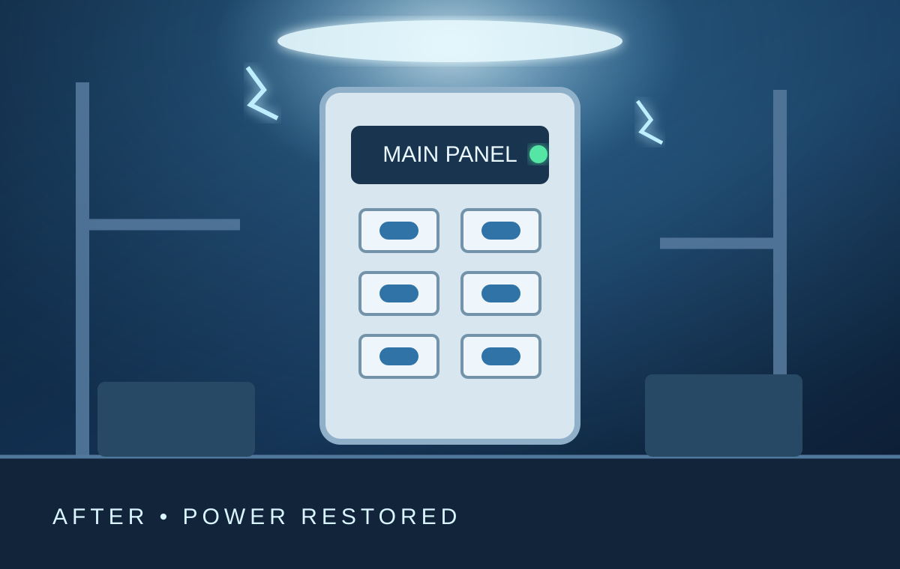

Trusted local service
Professional service when your home needs it most.
A reusable service-business website for trusted local teams.

Built for dependable service teamsClear communication, organized scheduling, and professional project follow-through.
ResponsiveFast inquiry follow-up
OrganizedSimple service scheduling
ProfessionalClear notes and photos
ReliableWork tracked from start to finish
What we do
Services built around your needs.
Use the admin to change every service, image, description, and display order.
Before and after
Click the dark photo to restore the power.
The project effect starts with the before image, runs a controlled electrical animation, and reveals the completed work.
A better service experience
From the first call to the final photo.
The connected admin helps the team handle inquiries, schedule jobs, assign employees, add notes, upload work photos, and record schedule changes.
Start a requestWhat customers can expect
- Clear contact and service information
- Simple request form
- Professional project examples
- Responsive mobile experience
- No confusing public pricing
Ready to schedule service?
Tell the team what you need and when you are available.